시각화 분석 방법¶
시계열, 분포, 관계형, 이상치, 지도형과 같은 시각화 분석 유형을 선택할 수 있습니다.
시계열형 그래프¶
꺾은선형 - 단일 차트 - 시계열 그래프¶
시간의 흐름(x축)에 따라 y축의 시계열 변화를 보고자 할 때 사용합니다.
x축 옵션
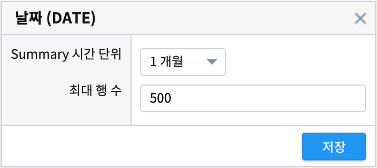y축 옵션
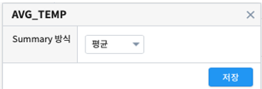차트 옵션
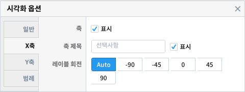x축과 y축에 설정한 변수를 각각 클릭하면 축 옵션을 이용가능합니다. 집계 시간단위(1시간, 1일, 1개월, 1년 등)나 집계 방식(합계, 평균, 최대, 최소 등)을 변경할 수 있습니다. 차트 옵션을 이용하면 결측값 표시여부, 축 제목, 범례 위치, 범례 표시 여부 등 다양한 시각화 옵션 조정이 가능합니다.
축 옵션 및 차트 옵션에 관한 자세한 사항은 매뉴얼을 참조하시기 바랍니다.
꺾은선형 - 단일 차트 - 그룹별 시계열 그래프¶
축의 단위가 같은 시계열을 그룹별로 구분하여 그래프를 그릴 수 있습니다. 일부 그룹의 필터링을 하기위해서 차트 왼쪽에 있는 필터를 사용할 수 있습니다.
필터링
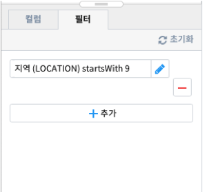필터에 관한 자세한 사항은 매뉴얼의 필터링 부분을 참조하시길 바랍니다.
꺾은선형 - 단일 차트 - 중첩 시계열 그래프¶
축의 단위(속력, 전력량, 온도 등)가 같은 그래프들을 하나의 축을 기준으로 그릴 수 있습니다. 주로 유사한 단위나 scale이 비슷한의 변수를 비교할 때 사용합니다.
중첩 시계열 그래프를 그리기 위해 y축 변수를 추가하고자 할때는 “+” 버튼을 눌러 변수를 추가합니다.
이때 차트의 범례 순서는 y축의 순서를 조정하여 변경할 수 있습니다.
축의 scale이 동일한 경우
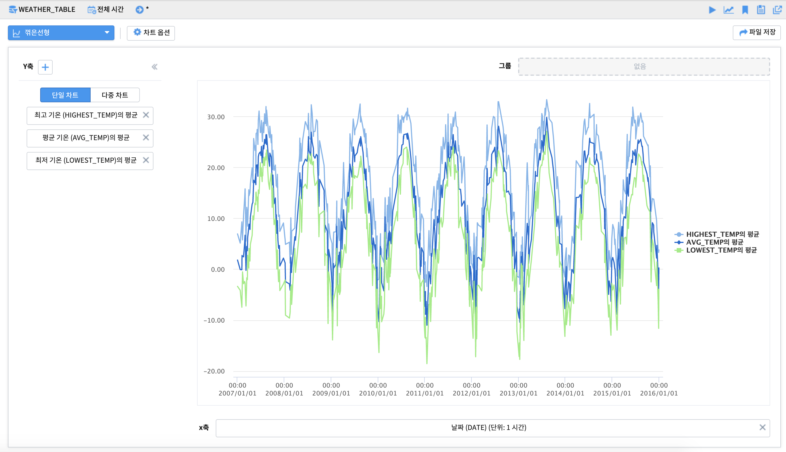축의 scale이 다른 경우
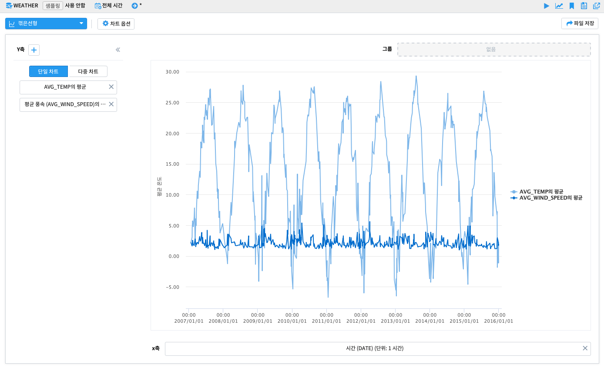주의) 비교하고자 하는 변수들의 단위가 다르거나 특정 변수의 scale이 매우 큰 경우에는 단일 차트를 시용하기보다는 다중 차트를 이용하는것을 권장합니다. (예:전력량 0~1000과 온도 -10~30)
꺾은선형 - 다중 차트 - 다중 시계열 그래프¶
축의 단위(속력, 전력량, 온도 등)가 다르거나, 축이 동일해도 scale이 다른 그래프들을 다중 차트로 그릴 수 있습니다.
다중 시계열 그래프를 그리기 위해 y축 변수를 추가하고자 할때는 + 버튼을 눌러 컬럼을 추가합니다.
시계열 분포 - 산점도¶
x축, y축으로 이루어진 직교좌표 위에 값을 점으로 나타내어 두 개 변수 간의 관계를 나타내는 방법입니다. 두 변수 간의 관계를 통해 선형 이나 비선형의 형태와 같은 모델을 확인해봄으로써 그 방향성과 강도를 조사할 수 있습니다.
모션 차트¶
시간에 따른 데이터를 x축, y축으로된 2차원 공간에서 버블의 크기와 다양한 색상, 데이터의 변화를 보여주는 차트입니다.
재생, 일시정지, 다시 재생, 중단의 옵션을 통해 데이터의 움직임을 조정할 수 있습니다.
분포형 그래프¶
히스토그램 - 단일 히스토그램¶
연속형 변수를 일정 구간을 나누어 그 빈도를 그래프로 나타낸 것입니다. x축의 구간 간격(bin size) 조정을 통해 집계 빈도를 조정 할 수 있습니다.
기본형
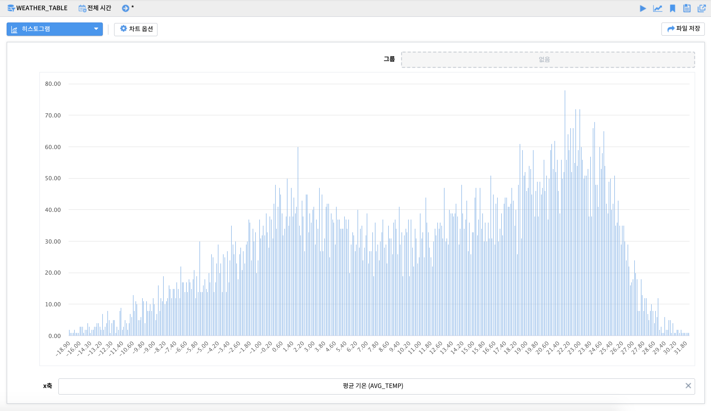기본형 - 구간 간격 조정
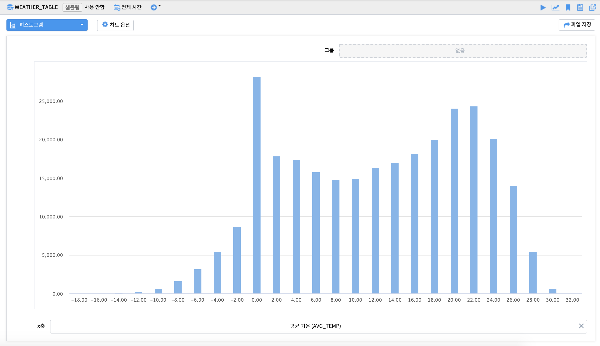x축 옵션
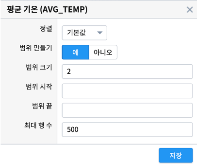x축에 설정한 변수를 클릭하면 축 옵션을 이용가능합니다. 특히 범위 만들기를 ‘예’로 변경하여 구간 간격(bin size; range size)를 조정 할 수 있습니다.
축 옵션에 관한 자세한 사항은 매뉴얼을 참조하시기 바랍니다.
막대형 그래프 - 집계형¶
범주형 변수의 빈도를 막대 그래프로 나타낸 것입니다. y축(이벤트 개수)에 원하는 변수를 넣어서 집계(합계, 평균 등)된 막대그래프를 표현할 수 있습니다.
x축과 y축에 설정한 변수를 각각 클릭하면 축 옵션을 이용가능합니다. x축의 순서(오름차순/내림차순)나 y축의 집계 방식(합계, 평균, 최대, 최소 등)을 변경할 수 있습니다. 차트 옵션을 이용하면 결측값 표시여부, 축 제목, 범례 위치, 범례 표시 여부 등 다양한 시각화 옵션 조정이 가능합니다.
축 옵션 및 차트 옵션에 관한 자세한 사항은 매뉴얼을 참조하시기 바랍니다.
막대형 그래프 - 스택형/풀스택형¶
범주형 변수의 그룹별 빈도를 막대 그래프로 나타낸 것입니다. 현재 x축 변수에서 그룹 변수가 차지하고 있는 빈도를 확인 가능합니다.
스택형은 데이터의 빈도를 그룹별로 누적 빈도를, 풀스택형은 전체를 기준으로 그룹별 상대적 비율(누적퍼센트)을 집계해 줍니다.
스택형
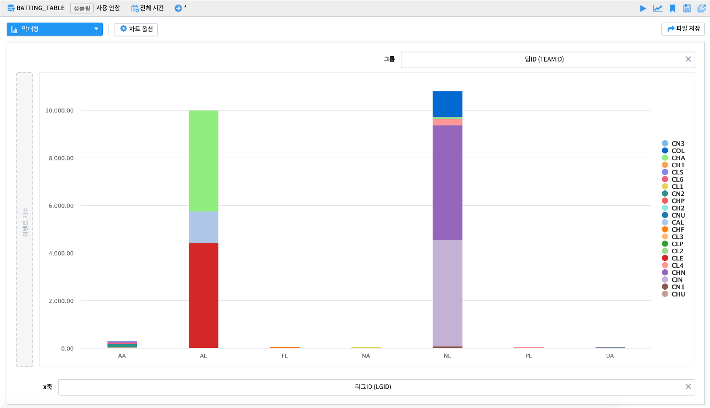풀스택형
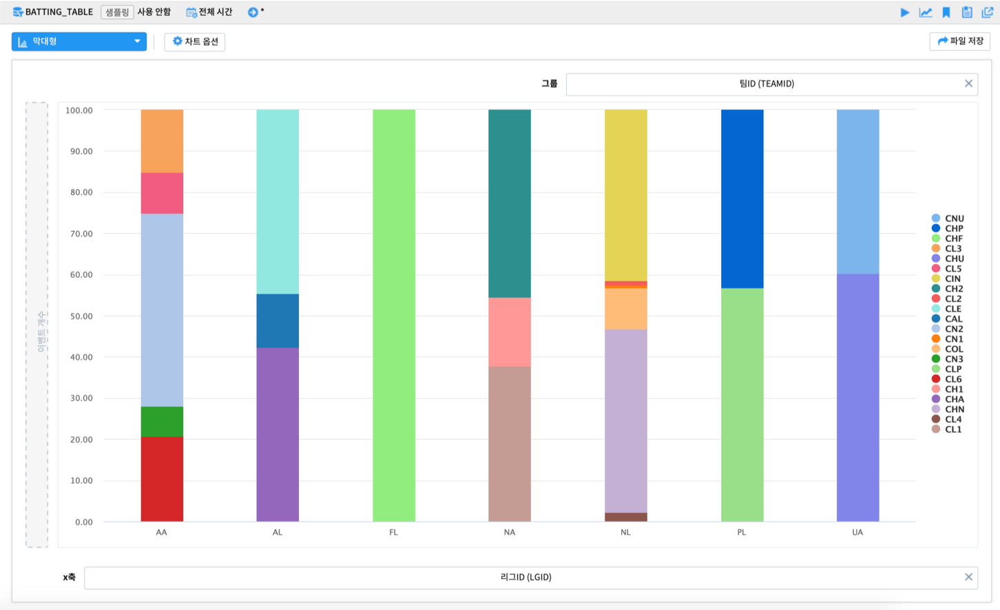차트 옵션
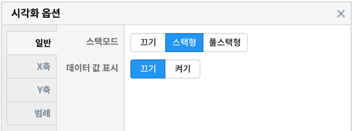차트 상단의 차트 옵션을 이용하면 스택형/풀스택형의 모드 유형, 데이터 값의 표현 여부 등을 조정 할 수 있습니다.
축 옵션 및 차트 옵션에 관한 자세한 사항은 매뉴얼을 참조하시기 바랍니다.
원형 그래프 - 기본형¶
원형 그래프는 섹터로 구분된 원 그래프이며 각 파이 섹터는 일부 관련 정보의 크기를 표시합니다. 원형 그래프는 전체를 기준으로 한 부분의 상대적 크기를 표시하는 데 사용됩니다.
기본형은 그룹의 단순 빈도를 나타낼때 사용할 수 있습니다.
차트 옵션
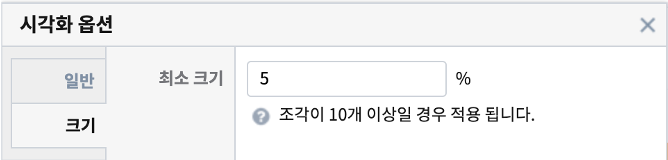차트 옵션을 통해 최소 조각의 크기를 설정하여 그보다 작은 크기의 조각들을 그외(other) 조각으로 병합할 수 있습니다.
원형 그래프 - 집계형¶
원형 그래프는 섹터로 구분된 원 그래프이며 각 파이 섹터는 일부 관련 정보의 크기를 표시합니다. 집계형은 변수의 집계값(합계, 평균 등)의 값을 파이 조각의 크기에 반영합니다.
관계형 그래프¶
히트맵¶
히트맵은 행/열에 따른 데이터의 값의 크기를 색상으로 변환하여 시각적으로 나타냅니다.
기본형
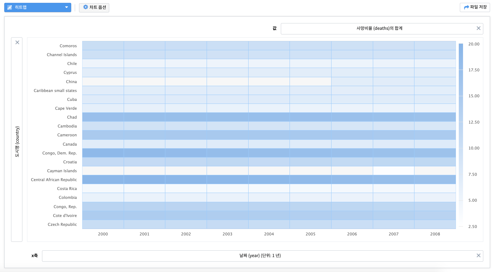색상 변경 및 값 표시
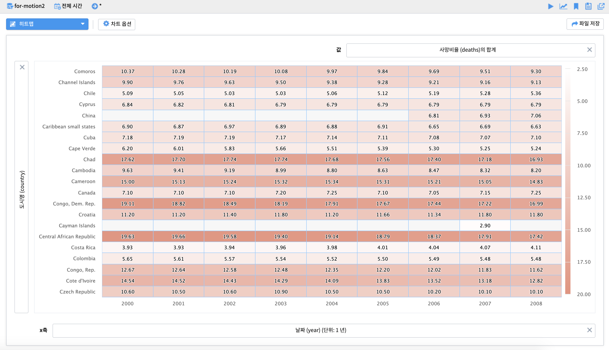차트 옵션
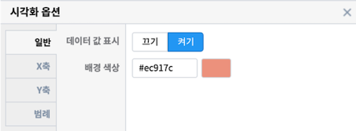차트 옵션에서는 데이터의 값을 보여주거나, 배경 색상을 변경 할 수 있습니다. 배경색상은 hex color code를 따릅니다.
축 옵션 및 차트 옵션에 관한 자세한 사항은 매뉴얼을 참조하시기 바랍니다.